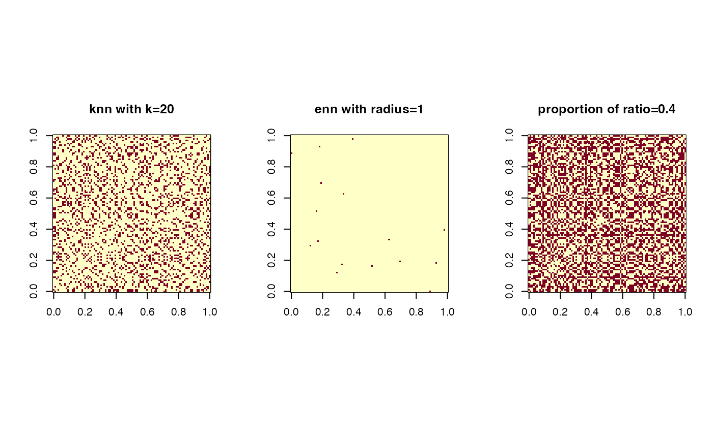

Given data, it first computes pairwise distance (method) using one of measures
defined from dist function. Then, type controls how nearest neighborhood
graph should be constructed. Finally, symmetric parameter controls how
nearest neighborhood graph should be symmetrized.
aux.graphnbd(
data,
method = "euclidean",
type = c("proportion", 0.1),
symmetric = "union",
pval = 2
)| data | an \((n\times p)\) data matrix. |
|---|---|
| method | type of distance to be used. See also |
| type | a defining pattern of neighborhood criterion. One of
|
| symmetric | either ``intersect'' or ``union'' for symmetrization, or ``asymmetric''. |
| pval | a \(p\)-norm option for Minkowski distance. |
a named list containing
a binary matrix of indicating existence of an edge for each element.
corresponding distance matrix. -Inf is returned for non-connecting edges.
Our package supports three ways of defining nearest neighborhood. First is
knn, which finds k nearest points and flag them as neighbors.
Second is enn - epsilon nearest neighbor - that connects all the
data poinst within a certain radius. Finally, proportion flag is to
connect proportion-amount of data points sequentially from the nearest to farthest.
In many graph setting, it starts from dealing with undirected graphs.
NN search, however, does not necessarily guarantee if symmetric connectivity
would appear or not. There are two easy options for symmetrization;
intersect for connecting two nodes if both of them are
nearest neighbors of each other and union for only either of them to be present.
Kisung You
# \donttest{
## Generate data
set.seed(100)
X = aux.gensamples(n=100)
## Test three different types of neighborhood connectivity
nn1 = aux.graphnbd(X,type=c("knn",20)) # knn with k=20
nn2 = aux.graphnbd(X,type=c("enn",1)) # enn with radius = 1
nn3 = aux.graphnbd(X,type=c("proportion",0.4)) # connecting 40% of edges
## Visualize
opar <- par(no.readonly=TRUE)
par(mfrow=c(1,3), pty="s")
image(nn1$mask); title("knn with k=20")
image(nn2$mask); title("enn with radius=1")
image(nn3$mask); title("proportion of ratio=0.4")

par(opar)
# }